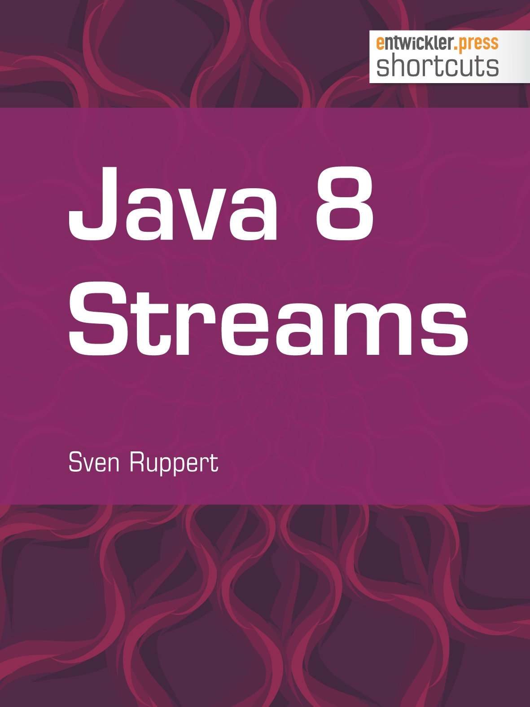

prepare..
.. for Java 8 - Kickstarter
Start 09:00
Sven Ruppert
coding java since 1996
Principal IT Consultant

Standort - München
Twittert bitte ;-)
Zeigt der Community das ihr aktiv seid !!
Principal IT Consultant

Standort - München
@SvenRuppert
Sven Ruppert
speaking java since 1996
Projekte aus den Bereichen:
- Automobilindustrie
- Energieversorgung
- Finanzen / Leasingbranche
- Luft - Raumfahrt / Satelliten
- Behörden / UN / Weltbank
Wo?
- Europa
- Asien - Indien bis Malaysia
Java 8 - JSR310
java.time - lesson learned by JODA Time
folgendes erwartet uns:
- Overview
- Core Packages
- Naming Conventions
- Beispiele
- Übungen
Java 8 - JSR310
Overview
Eigenschaften des JSR310
- Clear
- Fluent
- Immuntable
- Extensible
Java 8 - JSR310
Overview - Clear
Die Eigenschaften sind intuitiver (Meinung von Oracle)
Beispiel: Wenn ein Parameter mit null übergeben wird, wird eine NullPointerException geworfen.
Ob das im Detail so ist (intuitiver), muss jeder für sich selbst entscheiden.
Viel aus dem Projekt JODA Time gelernt.
Java 8 - JSR310
Overview - Fluent
Es wird eine fluent API angeboten.
Die meisten Methoden erlauben weder ein null als Übergabeparameter, noch geben sie null als Ergebnis zurück.
(siehe Oracle)
LocalDate today = LocalDate.now(); LocalDate payday = today.with(TemporalAdjuster.lastDayOfMonth()).minusDays(2);
Java 8 - JSR310
Overview - Immutable
Die meisten Klassen wurden immutable implementiert.
Date-Time API ist thread-save.
Die meisten Methoden beginnen mit of, from, with
Keine Konstruktorparameter, kaum setter
(siehe Oracle)
LocalDate dateOfBirth = LocalDate.of(2012, Month.MAY, 14); LocalDate firstBirthday = dateOfBirth.plusYears(1);
Java 8 - JSR310
Overview - Extensible
Wo immer möglich, kann die API erweitert werden.
z.B. TimeAdjuster,Queries, eigenes CalendarSystem...
Java 8 - JSR310
Core Packages
Core Packages des JSR310
- java.time
- java.time.chrono
- java.time.format
- java.time.temporal
- java.time.zone
Java 8 - JSR310
Core Packages - java.time
java.time
Core API zur Darstellung von Datum und Zeit. (ISO-8601)
Immutable, thread-safe
date, time date/time kombiniert, Zeitzonen, Dauer, Clocks, ..
Java 8 - JSR310
Core Packages - java.time.chrono
java.time.chrono
Alle anderen Calendar-Systeme als ISO-8601
nur von Interesse wenn man eigene Calendar-Systeme entwicklen möchte
Java 8 - JSR310
Core Packages - java.time.format
java.time.format
Formatieren und parsen der Datums- und Zeitangaben
Java 8 - JSR310
Core Packages - java.time.temporal
java.time.temporal
Extended API, für Frameworkentwickler
Ermöglicht die programatische Interoperation zwischen den Basisklassen
Java 8 - JSR310
Core Packages - java.time.zone
java.time.zone
Support für Zeitzonen
wichtigste Klassen: ZonedDateTime, ZoneId, ZoneOffset
Java 8 - JSR310
Naming - Conventions
- of - erzeugen von Instanzen
- from - erzeugen von Instanzen basierend auf Eingangsinstanz
- parse - erzeugen von Instanzen basierend auf Strings
- format - erzeugen von Strings basierend auf Pattern
- get - Std Getter Methode
- is - Queries auf den Objektzustand
- with - erzeugt Kopie basierend auf Attributänderung
- plus - erzeugt Kopie basierend auf Attributänderung
- minus - erzeugt Kopie basierend auf Attributänderung
- to - konvertieren in die Instanz der Zielklasse
- at - konvertieren in die Instanz der Zielklasse
Java 8 - JSR310
Beispiele
DayOfWeek:
DayOfWeek dow = DayOfWeek.MONDAY;
Locale locale = Locale.getDefault();
System.out.println(dow.getDisplayName(TextStyle.FULL, locale));
System.out.println(dow.getDisplayName(TextStyle.NARROW, locale));
System.out.println(dow.getDisplayName(TextStyle.SHORT, locale));
Java 8 - JSR310
Beispiele
Month:
Month month = Month.AUGUST;
Locale locale = Locale.getDefault();
System.out.println(month.getDisplayName(TextStyle.FULL, locale));
System.out.println(month.getDisplayName(TextStyle.NARROW, locale));
System.out.println(month.getDisplayName(TextStyle.SHORT, locale));
Java 8 - JSR310
Beispiele
LocalDate:
LocalDate date = LocalDate.of(2014, Month.APRIL, 3);
LocalDate nextWed = date.with(TemporalAdjusters.next(DayOfWeek.WEDNESDAY));
System.out.println("nextWed = " + nextWed); //nextWed = 2014-04-09
DayOfWeek dotw = LocalDate.of(2014, Month.APRIL, 3).getDayOfWeek();
System.out.println("dotw = " + dotw); //dotw = THURSDAY
Java 8 - JSR310
Beispiele
YearMonth:
YearMonth date = YearMonth.now();
//2014-03: 31 - dep on the Date now ;-)
System.out.printf("%s: %d%n", date, date.lengthOfMonth());
YearMonth date2 = YearMonth.of(2010, Month.FEBRUARY);
//2010-02: 28
System.out.printf("%s: %d%n", date2, date2.lengthOfMonth());
//2012-02: 29
YearMonth date3 = YearMonth.of(2012, Month.FEBRUARY);
System.out.printf("%s: %d%n", date3, date3.lengthOfMonth());
Java 8 - JSR310
Beispiele
MonthDay:
MonthDay date = MonthDay.of(Month.FEBRUARY, 29);
boolean validLeapYear = date.isValidYear(2010);
System.out.println("validLeapYear = " + validLeapYear);
IntStream
.rangeClosed(2010, 2015)
.forEach(v->System.out.println("validLeapYear ("+v+") = " + date.isValidYear(v)));
/*
validLeapYear = false
validLeapYear (2010) = false
validLeapYear (2011) = false
validLeapYear (2012) = true
validLeapYear (2013) = false
validLeapYear (2014) = false
validLeapYear (2015) = false
*/
Java 8 - JSR310
Beispiele
LocalTime:
LocalTime thisSec = LocalTime.now();
System.out.println("thisSec.getHour() = " + thisSec.getHour());
System.out.println("thisSec.getMinute() = " + thisSec.getMinute());
Java 8 - JSR310
Beispiele
LocalDateTime:
System.out.printf("now: %s%n", LocalDateTime.now());
System.out.printf("Apr 15, 1994 @ 11:30am: %s%n",
LocalDateTime.of(1994, Month.APRIL, 15, 11, 30));
System.out.printf("now (from Instant): %s%n",
LocalDateTime.ofInstant(Instant.now(), ZoneId.systemDefault()));
System.out.printf("6 months from now: %s%n",
LocalDateTime.now().plusMonths(6));
System.out.printf("6 months ago: %s%n",
LocalDateTime.now().minusMonths(6));
/*
now: 2014-03-31T10:39:31.088
Apr 15, 1994 @ 11:30am: 1994-04-15T11:30
now (from Instant): 2014-03-31T10:39:31.104
6 months from now: 2014-09-30T10:39:31.104
6 months ago: 2013-09-30T10:39:31.104 */
Java 8 - JSR310
Beispiele
ZoneId and ZoneOffset:
LocalDateTime dt = LocalDateTime.now();
System.out.println("dt = " + dt);
final ZoneId zoneId = ZoneId.systemDefault();
final ZonedDateTime zonedDateTimeLocal = dt.atZone(zoneId);
System.out.println("zonedDateTimeLocal = " + zonedDateTimeLocal);
//Australia/Darwin +09:30
final ZoneId zoneIdAU = ZoneId.of("Australia/Darwin");
final ZonedDateTime zonedDateTimeAU = dt.atZone(zoneIdAU);
System.out.println("zonedDateTimeAU = " + zonedDateTimeAU);
final ZoneOffset offset = zonedDateTimeAU.getOffset();
System.out.println("offset = " + offset);
/*
dt = 2014-03-31T10:58:43.098
zonedDateTimeLocal = 2014-03-31T10:58:43.098+02:00[Europe/Berlin]
zonedDateTimeAU = 2014-03-31T10:58:43.098+09:30[Australia/Darwin]
offset = +09:30
*/
Java 8 - JSR310
Beispiele
OffsetDate / OffsetDateTime:
LocalDateTime date = LocalDateTime.of(2014, Month.APRIL, 20, 19, 30);
ZoneOffset offset = ZoneOffset.of("-02:00");
OffsetDateTime dateOffset = OffsetDateTime.of(date, offset);
OffsetDateTime lastThursday =
dateOffset.with(TemporalAdjusters.lastInMonth(DayOfWeek.THURSDAY));
System.out.printf("The last Thursday in April 2014 is the %sth.%n",
lastThursday.getDayOfMonth());
/*
The last Thursday in April 2014 is the 24th.
*/
Java 8 - JSR310
Beispiele
Instant:
final DateTimeFormatter format = DateTimeFormatter.ofPattern("dd.MM.yyyy hh:mm a");
final ZonedDateTime zonedDayTimeNow = ZonedDateTime.now();
final String out = zonedDayTimeNow.format(format);
System.out.println("now = " + out);
/*
now = 31.03.2014 01:05 PM
*/
Java 8 - JSR310
Beispiele
Parsing / Formatting:
final DateTimeFormatter format = DateTimeFormatter.ofPattern("dd.MM.yyyy hh:mm a");
final ZonedDateTime zonedDayTimeNow = ZonedDateTime.now();
final String out = zonedDayTimeNow.format(format);
System.out.println("now = " + out);
final LocalDate localDate = LocalDate.parse(out, format);
System.out.println("localDate = " + localDate);
/*
now = 31.03.2014 01:05 PM
*/
Java 8 - JSR310
Beispiele
ChronoFields / IsoFields:
import static java.time.temporal.ChronoField.CLOCK_HOUR_OF_DAY;
import static java.time.temporal.ChronoField.DAY_OF_WEEK;
final LocalDate now = LocalDate.now();
System.out.println("LocalDate-CLOCK_HOUR_OF_DAY = " + now.isSupported(CLOCK_HOUR_OF_DAY));
System.out.println("LocalDate-DAY_OF_WEEK = " + now.isSupported(DAY_OF_WEEK));
final LocalDateTime localDateTime = LocalDateTime.now();
System.out.println("localDateTime-CLOCK_HOUR_OF_DAY = " + localDateTime.isSupported(CLOCK_HOUR_OF_DAY));
System.out.println("localDateTime-DAY_OF_WEEK = " + localDateTime.isSupported(DAY_OF_WEEK));
final int i = now.get(IsoFields.QUARTER_OF_YEAR);
System.out.println("QUARTER_OF_YEAR = " + i);
/*
LocalDate-CLOCK_HOUR_OF_DAY = false
LocalDate-DAY_OF_WEEK = true
localDateTime-CLOCK_HOUR_OF_DAY = true
localDateTime-DAY_OF_WEEK = true
QUARTER_OF_YEAR = 1
*/
Java 8 - JSR310
Beispiele
TemporalAdjuster 1 / 2:
LocalDate date = LocalDate.of(2014, Month.APRIL, 3);
DayOfWeek dotw = date.getDayOfWeek();
System.out.printf("%s is on a %s%n", date, dotw);
System.out.printf("first day of Month: %s%n",
date.with(TemporalAdjusters.firstDayOfMonth()));
final LocalDate d1 = date.with(new MyTemporalAdjuster());
System.out.println("d1 = " + d1);
final LocalDate dateSa = LocalDate.of(2014, Month.APRIL, 5);
System.out.println("d2 = " + dateSa.with(new MyTemporalAdjuster()));
/*
2014-04-03 is on a THURSDAY
first day of Month: 2014-04-01
d1 = 2014-04-03
d2 = 2014-04-07
*/
Java 8 - JSR310
Beispiele
TemporalAdjuster 2 / 2:
public static class MyTemporalAdjuster implements TemporalAdjuster {
@Override
public Temporal adjustInto(Temporal temporal) {
final LocalDate localDate = LocalDate.from(temporal);
final DayOfWeek dayOfWeek = localDate.getDayOfWeek();
if (dayOfWeek == DayOfWeek.SATURDAY || dayOfWeek == DayOfWeek.SUNDAY) {
final TemporalAdjuster next = TemporalAdjusters.next(DayOfWeek.MONDAY);
return temporal.with(next);
} else {
return temporal.with(localDate);
}
}
}
/*
2014-04-03 is on a THURSDAY
first day of Month: 2014-04-01
d1 = 2014-04-03
d2 = 2014-04-07
*/
Java 8 - JSR310
Beispiele
TemporalQueries 1 / 3:
TemporalQuery<TemporalUnit> query = TemporalQueries.precision();
System.out.printf("LocalDate precision is %s%n",
LocalDate.now().query(query));
System.out.printf("LocalDateTime precision is %s%n",
LocalDateTime.now().query(query));
System.out.printf("Year precision is %s%n",
Year.now().query(query));
System.out.printf("YearMonth precision is %s%n",
YearMonth.now().query(query));
System.out.printf("Instant precision is %s%n",
Instant.now().query(query));
/*
LocalDate precision is Days
LocalDateTime precision is Nanos
Year precision is Years
YearMonth precision is Months
Instant precision is Nanos
*/
Java 8 - JSR310
Beispiele
TemporalQueries 2 / 3:
final Boolean isApril6Mon = of(2014, APRIL, 6).query(new MyTemporalQuery());
final Boolean isApril7Mon = of(2014, APRIL, 7).query(new MyTemporalQuery());
System.out.println("isApril6Mon = " + isApril6Mon);
System.out.println("isApril7Mon = " + isApril7Mon);
public static class MyTemporalQuery implements TemporalQuery<Boolean>{
@Override
public Boolean queryFrom(TemporalAccessor temporal) {
final int i = temporal.get(ChronoField.DAY_OF_WEEK);
if (MONDAY.getValue() == i) return Boolean.TRUE;
else return Boolean.FALSE;
}
}
/*
isApril6Mon = false
isApril7Mon = true
*/
Java 8 - JSR310
Beispiele
TemporalQueries 3 / 3:
final TemporalQuery<Boolean> temporalQuery = v -> {
final int i = v.get(ChronoField.DAY_OF_WEEK);
if (MONDAY.getValue() == i) return Boolean.TRUE;
else return Boolean.FALSE;
};
final Boolean isApril6Mon = of(2014, APRIL, 6).query(temporalQuery);
final Boolean isApril7Mon = of(2014, APRIL, 7).query(temporalQuery);
System.out.println("isApril6Mon = " + isApril6Mon);
System.out.println("isApril7Mon = " + isApril7Mon);
/*
isApril6Mon = false
isApril7Mon = true
*/
Java 8 - JSR310
Beispiele
Period / Duration 1 / 2:
final Instant t1 = Instant.now();
final Instant t2 = t1.plusSeconds(10);
System.out.println("t1 = " + t1);
System.out.println("t2 = " + t2);
final Duration between = Duration.between(t1, t2);
final long seconds = between.getSeconds();
System.out.println("seconds = " + seconds);
/*
t1 = 2014-04-01T09:05:57.854Z
t2 = 2014-04-01T09:06:07.854Z
seconds = 10
*/
Java 8 - JSR310
Beispiele
Period / Duration 2 / 2:
System.out.println(ChronoUnit.SECONDS.between(t2, t1));
final LocalDate d1 = LocalDate.of(2010, 10, 10);
final LocalDate d2 = LocalDate.of(2011, 10, 10);
final Period period = Period.between(d1, d2);
System.out.println("period = " + period);
System.out.println("total years " + period.getYears());
System.out.println("total month " + period.getMonths());
System.out.println("total days " + period.getDays());
System.out.println("total month " + period.toTotalMonths());
/*
-10
period = P1Y
total years 1
total month 0
total days 0
total month 12
*/
Java 8 - JSR310
Beispiele
Clock:
final Clock clock = Clock.systemDefaultZone();
final ZoneId zone = clock.getZone();
System.out.println("zone = " + zone);
final Instant instant = clock.instant();
System.out.println("instant = " + instant);
final Clock fixed = Clock.fixed(instant, zone);
System.out.println("fixed.instant() = " + fixed.instant());
System.out.println("fixed.instant() = " + fixed.instant());
System.out.println("fixed.instant() = " + fixed.instant());
/*
zone = Europe/Berlin
instant = 2014-04-01T11:22:01.757Z
fixed.instant() = 2014-04-01T11:22:01.757Z
fixed.instant() = 2014-04-01T11:22:01.757Z
fixed.instant() = 2014-04-01T11:22:01.757Z
fixed.instant() = 2014-04-01T11:22:01.757Z
*/
Java 8 - JSR310
Beispiele
Non-ISO-Based Date :
LocalDateTime date = LocalDateTime.of(2013, Month.JULY, 20, 19, 30);
JapaneseDate jdate = JapaneseDate.from(date);
System.out.println("jdate = " + jdate);
HijrahDate hdate = HijrahDate.from(date);
System.out.println("hdate = " + hdate);
/*
jdate = Japanese Heisei 25-07-20
hdate = Hijrah-umalqura AH 1434-09-12
*/
Java 8 - JSR310
Beispiele
Legacy Code :
Instant inst = new Date().toInstant();
Date newDate = Date.from(inst);
final Instant now = Calendar.getInstance().toInstant();
ZonedDateTime zdt = ZonedDateTime.ofInstant(now, ZoneId.systemDefault());
Java 8 - JSR310
Overview
| Class or Enum | Year | Month | Day | Hours | Minutes | Seconds* | Zone Offset | Zone ID | toString Output |
|---|---|---|---|---|---|---|---|---|---|
| Instant | 2013-08-20T15:16:26.355Z | ||||||||
| LocalDate |
|
|
|
2013-08-20 | |||||
| LocalDateTime |
|
|
|
|
|
|
2013-08-20T08:16:26.937 | ||
| ZonedDateTime |
|
|
|
|
|
|
|
|
2013-08-21T00:16:26.941+09:00[Asia/Tokyo] |
| LocalTime |
|
|
|
08:16:26.943 | |||||
| MonthDay |
|
|
--08-20 | ||||||
| Year |
|
2013 | |||||||
| YearMonth |
|
|
2013-08 | ||||||
| Month |
|
AUGUST | |||||||
| OffsetDateTime |
|
|
|
|
|
|
|
2013-08-20T08:16:26.954-07:00 | |
| OffsetTime |
|
|
|
|
08:16:26.957-07:00 | ||||
| Duration | ** | ** | ** |
|
PT20H (20 hours) | ||||
| Period |
|
|
|
*** | *** | P10D (10 days) |
Java 8 - JSR310
Aufgabe
Select the ServiceCenter
Ein User gibt eine Nachricht in ein SupportSystem ein. Basierend auf seiner Zeitzone und Urzeit/Datum soll der ServiceCenter ausgewählt werden der gerade aktiv ist.
ServiceCenter sind: Berlin, New York, Sydney,Kuala Lumpur.
Geschäftszeiten: 0900 - 1600
Ist gerade keines aktiv, soll das nächst öffnende ausgesucht werden.
Java 8 - Streams
Overview
folgendes erwartet uns:
- Data in - Data out
- Core Methods
- Streams v Threads v Serial
- JavaFX Beispiel
- Streams Pattern Beispiele
Java 8 - Streams
Data in - Data out
folgendes erwartet uns:
- Was sind Streams
- Daten - Quellen
- Daten - Senken
- Fazit
Data in - Data out- Was sind Streams
Streams in Java8 sind:
- Sind keine Datenstruktur
- Für den Einsatz von Lambdas konzipiert worden
- Bieten keinen wahlfreien Zugriff per Index oder ähnliches
- Sind lazy organisiert
- Sind parallel, wenn gewünscht
- Sind ungebunden, da sie nicht wie Collections initial befüllt werden
Data in - Data out- Daten - Quellen
Statisch:
Stream.of(val1,val2,val3…) , Stream.of(array) und list.stream().
Dynamisch:
final Stream<Pair> stream = Stream.<Pair>builder().add(new Pair()).build();
Stream.generate(() -> {
final Pair p = new Pair();
p.id = random.nextInt(100);
p.value = "Value + " + p.id;
return p;
})
Data in - Data out- Daten - Senken
stream.toArray();
stream.collect(Collectors.toList());
stream.collect(Collectors.toSet());
stream.collect(Collectors.groupingBy(..))
Ergebnis als Array und als Map
final List<Pair> generateDemoValues = generateDemoValues();
final Pair[] toArray = generateDemoValues.stream().toArray(Pair[]::new);
final Map<Integer,List<Pair>> collectedToMap = generateDemoValues.stream() .collect(Collectors.groupingBy(Pair::getId));
Data in - Data out- Fazit
Sehr schön zu sehen ist, dass sich die Streams einfach in bestehenden JavaCode einbinden lassen.
Keine unnötigen Wrapper oder ähnliches sind zu schreiben. Die Integration ist damit mühelos in Altprojekten genauso möglich wie in neuen Projekten.
Hat man sich an die API ein wenig gewöhnt, fallen einem sehr viele Stellen auf, in denen eine starke Codereduktion durch den Einsatz von Streams erreicht werden kann.
Data in - Data out- Aufgaben
Erzeuge einen Stream aus 10 Elementen der Klasse Pair.
- aus einer Liste
- mit einem Builder
- mit einem Suplier
Konsumiere alle Elemente des Streams. (System.out)
Überführe den Stream in
- eine Liste
- ein Array
- in eine Map
Java 8 - Streams
Core Methods
folgendes erwartet uns:
- forEach
- map
- filter
- findFirst
- reduce
- limit/skip
- distinct
- min/max
- allMatch/anyMatch/noneMatch
- parallel / sequenziell
- Fazit
Core Methods - forEach
Diese Methode ist auch bei Iterable, List, Map und einigen anderen Klassen/Interfaces zu finden, was erfreulicherweise zu kürzeren sprachlichen Konstrukten führt
public static void main(String[] args) {
final List<Pair> generateDemoValues = new PairListGenerator(){}.generateDemoValues();
//pre JDK8
for (final Pair generateDemoValue : generateDemoValues) {
System.out.println(generateDemoValue);
}
//long version
generateDemoValues.stream().forEach(v -> System.out.println(v) );
//short version
generateDemoValues.stream().forEach(System.out::println);
generateDemoValues.stream().forEachOrdered(System.out::println);
final Consumer<? super Pair> consumer = System.out::println;
generateDemoValues.stream().forEachOrdered(consumer);
}
Core Methods - map (1/2)
Die Methode map(lambda) erzeugt einen neuen Stream bestehend aus der Summe aller Transformationen der Elemente des Quell-Streams. Auch hier wieder ist das Argument ein Lambda. Das bedeutet, dass der Zielstream bis auf die funktionale Kopplung nichts mit dem Quellstream gemeinsam haben muss.
private static Stream<DemoElement> getDemoElementStream(List<Pair> generateDemoValues) {
//map from Point to DemoElements
return generateDemoValues.stream().map(v -> {
final String value = v.getValue();
final DemoElement d = new DemoElement();
d.setDatum(new Date());
d.setValue(Base64.getEncoder().encodeToString(value.getBytes()));
return d;
});
}
Core Methods - map (2/2)
public static void main(String[] args) {
final List<Pair> generateDemoValues = new PairListGenerator(){}.generateDemoValues();
final Stream<DemoElement> demoElementStream = getDemoElementStream(generateDemoValues);
final Stream<String> stringStream = getDemoElementStream(generateDemoValues)
.map(v -> v.getValue());
final Stream<String> stringStreamShort = getDemoElementStream(generateDemoValues)
.map(DemoElement::getValue);
//map from Point to DemoElements to Strings
final List<String> stringList = generateDemoValues.stream().map(v -> {
final String value = v.getValue();
final DemoElement d = new DemoElement();
d.setDatum(new Date());
d.setValue(Base64.getEncoder().encodeToString(value.getBytes()));
return d;
})
.map(DemoElement::getValue).collect(Collectors.toList());
}
Core Methods - filter
Wie die Methode map(lambda), erzeugt die Methode filter(Lambda) ebenfalls einen neuen Stream. Aus der Menge der Quellelemente werden die für die weiteren Schritte benötigten Elemente herausgefiltert.
public static void main(String[] args) {
final List<Pair> generateDemoValues = new PairListGenerator(){}.generateDemoValues();
final Stream<Pair> filteredPairStream = generateDemoValues.stream().filter(v -> v.getId() % 2 == 0);
}
Core Methods - findFirst
Immer wieder gibt es eine Menge von Elementen, deren Reihenfolge nicht definiert, die Anzahl unbestimmt, aber genau ein Element dieser Menge mit bestimmten Eigenschaften zu entnehmen ist. Was auf der Datenbank dank SQL kein Problem in den meisten Fällen darstellt, kann auf der imperativen Seite schon mal zu einem längeren Stück Quelltext führen. Die Methode findFirst() liefert das erste Element aus dem Stream. Auf den ersten Blick eine triviale Methode, so mehr erfreut man sich beim zweiten Blick. Der Rückgabewert ist ein Optional im Falle eine leeren Streams ein leeres Optional.
final List<String> demoValues = Arrays.asList("AB", "AAB", "AAAB", "AAAAB", "AAAAAB");
final String value = demoValues
.stream()
.filter(o -> o.contains("AAA"))
.findFirst().orElse("noop ");
System.out.println("value = " + value);
Core Methods - reduce
Bei den bisherigen Betrachtungen wurden ausschließlich Transformationen betrachtet, die eine Abbildung von n auf m darstellten. Die Methode reduce((v1,v2)->) jedoch ermöglicht die Abbildung von n Elementen auf ein finales Element.
final List<String> demoValues = Arrays.asList("A", "B", "C", "D", "E");
System.out.println(demoValues.stream()
.reduce(String::concat));
System.out.println(demoValues.stream()
.reduce("X_", (v1,v2)->{
System.out.println("v1 -> " + v1);
System.out.println("v2 -> " + v2);
return v1.concat(v2)+"_";
}));
System.out.println(demoValues.parallelStream()
.reduce("X_", (v1,v2)->{
// System.out.println("v1 -> " + v1);
// System.out.println("v2 -> " + v2);
final String result = v1.concat(v2) + "_";
System.out.println("v1 " + v1 + " plus v2_ " + v2 + "_ => " + result);
return result;
}));
Core Methods - reduce
System.out.println(demoValues.stream()
.reduce("X_", (v1,v2)->{
System.out.println("v1 -> " + v1);
System.out.println("v2 -> " + v2);
return v1.concat(v2)+"_";
}));
v1 -> X_
v2 -> A
v1 -> X_A_
v2 -> B
v1 -> X_A_B_
v2 -> C
v1 -> X_A_B_C_
v2 -> D
v1 -> X_A_B_C_D_
v2 -> E
X_A_B_C_D_E_
Core Methods - reduce
System.out.println(demoValues.parallelStream()
.reduce("X_", (v1,v2)->{
final String result = v1.concat(v2) + "#";
System.out.println("v1 " + v1 + " plus v2_ " + v2 + "_ => " + result);
return result;
}));
v1 X_ plus v2_ C_ => X_C#
v1 X_ plus v2_ A_ => X_A#
v1 X_ plus v2_ D_ => X_D#
v1 X_ plus v2_ B_ => X_B#
v1 X_ plus v2_ E_ => X_E#
v1 X_A# plus v2_ X_B#_ => X_A#X_B##
v1 X_D# plus v2_ X_E#_ => X_D#X_E##
v1 X_C# plus v2_ X_D#X_E##_ => X_C#X_D#X_E###
v1 X_A#X_B## plus v2_ X_C#X_D#X_E###_ => X_A#X_B##X_C#X_D#X_E####
X_A#X_B##X_C#X_D#X_E####
Core Methods - limit/skip
Streams können undefiniert lang sein. Das bedeutet, dass im Extremfall ein Stream kein Ende hat. Es ist also manchmal sinnvoll, Streams nur bis zu einer bestimmten Länge abzuarbeiten, oder nur eine bestimmte Menge von Ergebnissen zu sammeln, da der Rest nicht mehr für die nachfolgende Logik zu verwenden ist. Die Methode limit(count) ist genau dafür gedacht.
final List<Integer> demoValues
= Arrays.asList(1, 2, 3, 4, 5, 6, 7, 8, 9, 10);
//limit the input
System.out.println(demoValues.stream().limit(4).collect(Collectors.toList()));
//limit the result
System.out.println(demoValues
.stream().filter((v) -> v > 4).limit(4).collect(Collectors.toList()));
System.out.println(demoValues
.stream().skip(4).collect(Collectors.toList()));
Core Methods - distinct
Aus dem Bereich SQL kennt man den Befehl distinct, um eine Menge von Werten auf jeweils nur ein Exemplar eines Wertes zu reduzieren. Also das Erzeugen einer unique – Menge. Genau dasselbe erledigt die Methode distinct().
// example result:
// [77, 79, 81, 95, 43, 10, 53, 48, 74, 68, 60, 86, 83, 24, 57, 28, 8,
// 85, 70, 66, 20, 14, 97, 73, 22, 36, 40, 39, 32, 19, 41, 67, 25, 88]
final Random random = new Random();
System.out.println(
Stream.generate(() -> random.nextInt(100))
.limit(40)
.distinct()
.collect(Collectors.toList())
);
Core Methods - min/max
Die Methoden min(Comparator) und max(Comparator) liefern aus der Menge der Werte im Stream das Minimum, bzw das Maximum.
final List<Integer> demoValues
= Arrays.asList(1, 2, 3, 4, 5, 6, 7, 8, 9, 10);
//find the maximum
System.out.println(demoValues
.stream().max(Integer::compareTo)
);
//find the BUG ;-)
System.out.println(demoValues
.stream().min((v1, v2) -> Integer.compare(v2, v1))
);
Core Methods - allMatch/anyMatch/noneMatch
Die Methoden allMatch(<Predicate>), anyMatch(<Predicate>), none-Match(<Predicate>) liefern ein boolean zurück. allMatch wenn die definierte Bedingung bei genau allen Elementen zutrifft, anyMatch wenn einige Elemente der Bedingung entsprechen (mind 2 in diesem Beispiel) noneMatch wenn kein einziges Element der Bedingung entspricht.
public static final List<Integer> demoValues = Arrays.asList(1, 2, 3, 4, 5, 6, 7, 8, 9, 10);
private static Stream<Integer> getStream() {return demoValues.stream();}
static final Function<Integer, Integer> f = (e) -> {
System.out.println("e = " + e);
return e;
};
public static void main(String[] args) {
// true, some are matching
System.out.println("anyMatch " + getStream().map(f).anyMatch((v) -> v % 2 == 0));
//false, not all are matching
System.out.println("allMatch " + getStream().map(f).allMatch((v) -> v % 2 == 0));
//false, not all are NOT matching
System.out.println("noneMatch " + getStream().map(f).noneMatch((v) -> v % 2 == 0));
//5 matching the filter, 2,4,6,8,10
System.out.println("count " + getStream().map(f).filter((v) -> v % 2 == 0).count());
}
Core Methods - parallel / sequenziell
Die beiden letzten Methoden die wir uns hier ansehen werden sind parallel() und sequential(). Die Methoden die wiederum einen Stream zurückliefern können so explizit in eine serielle oder parallele Version geschaltet werden.
final List<Integer> demoValues
= Arrays.asList(1, 2, 3, 4, 5, 6, 7, 8, 9, 10);
System.out.println(demoValues.stream() //seriell
.map((m1) -> m1)
.parallel()
.map((m2) -> m2)
.sequential() //seriell
.collect(Collectors.toList()));
}
Core Methods - Fazit
Schon diese wenigen Basis-Methoden ermöglichen einem nach sehr kurzer Einarbeitung Streams recht effizient und effektiv einzusetzen. Zur Übung kann ich empfehlen bestehende Quelltexte in Konstrukte mit Streams umzuformen. Dabei wird sich zeigen, dass mit dieser Transformation eine starke Code-Reduktion einhergeht. An so mancher Stelle kann man dank der Streams auch Teilaufgaben parallelisieren, was zu einer höheren Auslastung der vorhandenen modernen CPU-Architekturen führt.
Pause...
may the coffee be with us!
Dauer 5min
Java 8 - Streams
Streams v Threads v Serial
Wir werden nun ein Beispiel durchgehen, in dem wir eine Aufgabe einmal klassisch seriell, dann mittels Threads und zum Schluss mit Streams realisieren. Wie groß sind die Unterschiede in der Codekomplexität, welche Performanceunterschiede gibt es?
folgendes erwartet uns:
- Die Aufgabe
- Seriell
- Threads
- Streams
- Fazit
Streams v Threads v Serial - Die Aufgabe
Beginnen wir mit einem einfachen Interface: Der Worker , in dem zwei Methoden definiert werden die zur synthetischen Lasterzeugung verwendet werden. Ziel hier ist es, zuerst eine Matrix mit Stützstellen aufzubauen (generateDemoValueMatrix), die danach mittels Splines interpoliert wird (generateInterpolatedValues).
Der erste Teil ist die Erzeu-gung einer Wertereihe (DemoValueGenerator) zur Darstellung der Stützstellen. Die Implementierung wurde als Interface mit default – Methode gewählt, was einer JDK8 Notation entspricht. Die Implementierung selbst erfolgte an der Stelle noch ohne Streams.
Der zweite Teil ist die Berechnung der interpolierten Werte (WorkLoadGenerator), was hier zum einen der Lasterzeugung dient und zum anderen als Beispiel zum Einbinden von ThirdParty-Code verwendet wird.
Streams v Threads v Serial - Die Aufgabe / Worker
public interface Worker {
public static final int ANZAHL_KURVEN = 200;
public static final int ANZAHL_MESSWERTE = 10;
public static final int MAX_GENERATED_INT = 100;
public abstract List<List<Integer>> generateDemoValueMatrix();
public abstract List<List<Double>>
generateInterpolatedValues(List<List<Integer>> baseValues);
}
Streams v Threads v Serial - Seriell
public class WorkerSerial implements Worker {
@Override
public List<List<Double>>
generateInterpolatedValues(List<List<Integer>> baseValues) {
final WorkLoadGenerator generator = new WorkLoadGenerator();
final List<List<Double>> result = new ArrayList<>();
for (final List<Integer> valueList : baseValues) {
final List<Double> doubleList = generator.generate(valueList);
result.add(doubleList);
}
return result;
}
private DemoValueGenerator valueGenerator = new DemoValueGenerator(){};
public List<List<Integer>> generateDemoValueMatrix() {
final List<List<Integer>> result = new ArrayList<>();
for (int i = 0; i < ANZAHL_KURVEN; i++) {
final List<Integer> demoValuesForY
= valueGenerator.generateDemoValuesForY();
result.add(demoValuesForY);
}
return result;
}
}
Streams v Threads v Serial - Threads (1/3)
@Override
public List<List<Integer>> generateDemoValueMatrix() {
final List<List<Integer>> result = new ArrayList<>();
final List<Task> taskList = new ArrayList<>();
for(int i = 0; i< ANZAHL_KURVEN; i++){
taskList.add(new Task());
}
for (final Task task : taskList) {
task.run();
}
for (final Task task : taskList) {
try {
task.join();
result.add(task.result);
} catch (InterruptedException e) {
e.printStackTrace();
}
}
return result;
}
Streams v Threads v Serial - Threads (2/3)
@Override
public List<List<Double>>
generateInterpolatedValues(List<List<Integer>> baseValues) {
final List<List<Double>> result = new ArrayList<>();
final List<TaskInterpolate> taskList = new ArrayList<>();
for (final List<Integer> baseValue : baseValues) {
final TaskInterpolate taskInterpolate = new TaskInterpolate();
taskInterpolate.values.addAll(baseValue);
taskList.add(taskInterpolate);
}
for (final TaskInterpolate task : taskList) {
task.run();
}
for (final TaskInterpolate task : taskList) {
try {
task.join();
result.add(task.result);
} catch (InterruptedException e) {
e.printStackTrace();
}
}
return result;
}
Streams v Threads v Serial - Threads (3/3)
public static class Task extends Thread {
public List<Integer> result = new ArrayList<>();
private DemoValueGenerator valueGenerator = new DemoValueGenerator(){};
@Override
public void run() {
result.addAll(valueGenerator.generateDemoValuesForY());
}
}
public static class TaskInterpolate extends Thread {
public final List<Integer> values = new ArrayList<>();
public final List<Double> result = new ArrayList<>();
private final WorkLoadGenerator generator = new WorkLoadGenerator();
@Override
public void run() {
result.addAll(generator.generate(values));
}
}
Übung..
Lösung mittels Streams
Dauer 15min
Streams v Threads v Serial - Streams (Lösung 1/3)
public class WorkerParallelStreams implements Worker{
public List<Integer> generateDemoValuesForY(){
final Random random = new Random();
return Stream
.generate(() -> random.nextInt(MAX_GENERATED_INT))
.limit(ANZAHL_MESSWERTE)
.collect(Collectors.toList());
}
//..
}
Streams v Threads v Serial - Streams (Lösung 2/3)
public class WorkerParallelStreams implements Worker{
@Override
public List<List<Integer>> generateDemoValueMatrix(){
return Stream
.generate(this::generateDemoValuesForY)
.limit(ANZAHL_KURVEN)
.collect(Collectors.toList());
}
}
Streams v Threads v Serial - Streams (Lösung 3/3)
public class WorkerParallelStreams implements Worker{
@Override
public List<List<Double>> generateInterpolatedValues(List<List<Integer>> baseValueMatrix) {
baseValueMatrix.parallelStream()
.map(v -> {
final WorkLoadGenerator generator
= new WorkLoadGenerator();
return generator.generate(v);
})
.collect(Collectors.toList());
return baseValueMatrix;
}
}
Übung..
Lösung mittels Streams und default Methoden
Dauer 5min
Ergebnis
Vergleich der Lösungungen
Serial v Threads v Streams
Streams v Threads v Serial - Fazit
Zusammenfassend kann man sagen, dass die Kombination von Streams und den weiteren neuen Sprachelementen von dem JDK8 zu einer deutlichen Codereduktion führen können.
Schon einfache Bestandteile können parallelisiert werden, ohne das der Entwickler sich mit den sonst notwendigen Konstrukten wie z.B. Threads auseinandersetzt.
Es sollte allerdings auch hier beachtet werden, ganz ohne Verständnis für Nebenläufigkeit geht es auch hier nicht. Nicht zwangsläufig ist eine parallele Implementierung auch die effizienteste Implementierung, geschweige denn semantisch dieselbe.
Pause...
may the coffee be with us!
Dauer 5min
Java 8 - Streams
JavaFX Beispiel
folgendes erwartet uns:
- Hole (generiere) die Reihe der Messwerte
- Berechne die interpolierten Werte
- Erzeuge die graphischen Elemente
- Befülle das Line-Chart
- Fazit
JavaFX Beispiel - 1a/5
public List<List<Integer>> generateDemoValueMatrix() {
final List<List<Integer>> resultMatrix = new ArrayList<>();
final Random random = new Random();
for(int anzahlKurven = 0; anzahlKurven <ANZAHL_KURVEN; anzahlKurven++){
final List<Integer> result = new ArrayList<>();
for (int i = 0; i < 10; i++) {
final int nextInt = random.nextInt(100);
result.add(nextInt);
}
resultMatrix.add(result);
}
return resultMatrix;
}
JavaFX Beispiel - 1b/5
public List<List<Integer>> generateDemoValueMatrix() {
final List<List<Integer>> result = new ArrayList<>();
for(int anzahlKurven = 0; anzahlKurven <ANZAHL_KURVEN; anzahlKurven++){
final List<Integer> demoValuesForY = generateDemoValuesForY();
result.add(demoValuesForY);
}
return result;
}
public List<Integer> generateDemoValuesForY() {
final Random random = new Random();
final List<Integer> result = new ArrayList<>();
for (int i = 0; i < 10; i++) {
final int nextInt = random.nextInt(100);
result.add(nextInt);
}
return result;
}
JavaFX Beispiel - 1c/5
public List<List<Integer>> generateDemoValueMatrix() {
return Stream
.generate(this::generateDemoValuesForY)
.limit(ANZAHL_KURVEN)
.collect(Collectors.toList());
}
public List<Integer> generateDemoValuesForY(){
final Random random = new Random();
return Stream
.generate(() -> {
return random.nextInt(100);
})
.limit(10)
.collect(Collectors.toList());
}
JavaFX Beispiel - 1d/5
public List<List<Integer>> generateDemoValueMatrix() {
return Stream
.generate(this::generateDemoValuesForY)
.limit(ANZAHL_KURVEN)
.collect(Collectors.toList());
}
public List<Integer> generateDemoValuesForY(){
final Random random = new Random();
return Stream
.generate(() -> random.nextInt(100))
.limit(10)
.collect(Collectors.toList());
}
JavaFX Beispiel - 1e/5
public List<List<Integer>> generateDemoValueMatrix() {
return Stream
.generate(this::generateDemoValuesForY)
.limit(ANZAHL_KURVEN)
.collect(Collectors.toList());
}
public List<Integer> generateDemoValuesForY(){
return new Random()
.ints(0, 100)
.limit(10)
.boxed()
.collect(Collectors.toList());
}
JavaFX Beispiel - 1f/5
public List<List<Integer>> generateDemoValueMatrix() {
final Random random = new Random();
return Stream.generate(
() -> Stream.generate(
() -> random.nextInt(100))
.limit(10)
.collect(Collectors.toList())
)
.limit(ANZAHL_KURVEN)
.collect(Collectors.toList());
}
JavaFX Beispiel - 1g/5
public List<List<Integer>> generateDemoValueMatrix() {
return Stream.generate(
() -> new Random()
.ints(0, 100)
.limit(10)
.boxed()
.collect(Collectors.toList())
).limit(ANZAHL_KURVEN)
.collect(Collectors.toList());
}
public List<List<Integer>> generateDemoValueMatrix() {
return generate(() -> new Random()
.ints(0, 100)
.limit(10).boxed().collect(toList())
).limit(ANZAHL_KURVEN).collect(toList());
}
JavaFX Beispiel - 1 Vergleich / 5
public List<List<Integer>> generateDemoValueMatrix() {
final List<List<Integer>> resultMatrix = new ArrayList<>();
final Random random = new Random();
for(int anzahlKurven = 0; anzahlKurven <ANZAHL_KURVEN; anzahlKurven++){
final List<Integer> result = new ArrayList<>();
for (int i = 0; i < 10; i++) {
final int nextInt = random.nextInt(100);
result.add(nextInt);
}
resultMatrix.add(result);
}
return resultMatrix;
}
public List<List<Integer>> generateDemoValueMatrix() {
return generate(() -> new Random()
.ints(0, 100)
.limit(10).boxed().collect(toList())
).limit(ANZAHL_KURVEN).collect(toList());
}
JavaFX Beispiel - 1/2
private List<List<Double>> getValuesForSeries() {
final List<List<Integer>> demoValueMatrix = generateDemoValueMatrix();
return demoValueMatrix
.parallelStream()
.map(v -> {
final UnivariateFunction interpolateFunction = createInterpolateFunction(v);
//baue Kurve auf
final int anzahlValuesInterpolated = (v.size() - 1) * STEP_SIZE;
return IntStream
.rangeClosed(0, anzahlValuesInterpolated).parallel().boxed()
.map(interpolateFunction::value)
.collect(toList());
})
.collect(toList());
}
JavaFX Beispiel - 2/2
private List<XYChart.Series> generateNextSeries() {
final List<XYChart.Series> chartSeries = getValuesForSeries()
.parallelStream()
.map(v -> {
final XYChart.Series nextSeries = new XYChart.Series();
IntStream.range(0,v.size()).forEach((i)->{
final XYChart.Data data = new XYChart.Data(i, v.get(i));
nextSeries.getData().add(data);
});
return nextSeries;
}).collect(toList());
return chartSeries;
}
JavaFX Beispiel - Fazit
Paralleles Erzeugen der GUI Elemente hat in diesem Beispiel einen spürbaren SpeedUP!
Java 8 - Streams
Streams Pattern Beispiele
folgendes erwartet uns:
- Fibonacci
- Matrix
- Random
- Fazit
Streams Pattern Beispiele - Fibonacci
public static void main(String[] args) {
makeFibStream(10).forEachOrdered(System.out::println);
}
public static Stream<Long> makeFibStream() {
return(Stream.generate(new FibonacciSupplier()));
}
public static Stream<Long> makeFibStream(int numFibs) {
return(makeFibStream().limit(numFibs));
}
public static List<Long> makeFibList(int numFibs) {
return(makeFibStream(numFibs).collect(Collectors.toList()));
}
public static class FibonacciSupplier implements Supplier<Long> {
private long previous = 0;
private long current = 1;
@Override
public Long get() {
long next = current + previous;
previous = current;
current = next;
return(previous);
}
}
Ad hoc Übung..
Finde die Zahl 66
Dauer 15min :-)
final List<List<Integer>> matrix = new ArrayList<>();
matrix.add(Arrays.asList(1, 2, 3, 4, 5, 6, 7, 8, 9));
matrix.add(Arrays.asList(1,2,3,4,5,66,7,8,9)); //hier eine 66
matrix.add(Arrays.asList(1, 2, 3, 4, 5, 6, 7, 8, 9));
Streams Pattern Beispiele - Lösung
Finde die Zahl 66
public static void main(String[] args) {
final List<List<Integer>> matrix = new ArrayList<>();
matrix.add(Arrays.asList(1, 2, 3, 4, 5, 6, 7, 8, 9));
matrix.add(Arrays.asList(1,2,3,4,5,66,7,8,9)); //hier eine 66
matrix.add(Arrays.asList(1, 2, 3, 4, 5, 6, 7, 8, 9));
matrix.forEach(System.out::println);
final Integer s = matrix.stream()
.map(l -> l.stream()
.filter(v -> v.equals(66))
.findFirst().orElse(null))
.filter(f -> f != null)
.findFirst().orElse(null);
System.out.println("s = " + s);
}
Streams Pattern Beispiele - Random
new Random()
.doubles()
.boxed()
.map((d) -> {
final TemperaturSensorValue v = new TemperaturSensorValue();
v.setDate(new Date());
v.setSensorID("testID");
v.setValue(d);
return v;
})
.limit(1_000_000)
.forEach((t) -> {
try {
repo.create(t);
} catch (ArangoDb4JException e) {
e.printStackTrace();
}
});
Streams Pattern Beispiele - Fazit
Bei der Verwendung von Streams stellen sich unter anderem folgende Fragen.
- Ist eine Nebenläufigkeit gewünscht oder nicht? Wenn ja, dann sind Streams mittels Verwendung von parallelStream() in vielen Fällen ein einfacher und schneller Ansatz.
- Soll die Verschachtelung des Kontrollflusses gemindert werden? Hier ist es abhängig von den Konstrukten innerhalb der Fallunterscheidun-gen selbst. Mit leichten Veränderungen lassen sich mittels Streams recht oft aussagekräftigere Konstrukte aufbauen, die auf lange Sicht zu einer besseren Wartbarkeit führen. Ob sich das bei Alt-Projekten immer lohnt muss also im Einzelfall endschieden werden.
- Sind mathematische Funktionen abzubilden? Hier kann man in vielen Fällen mittels Streams schneller zum Erfolg kommen, ohne gleich Scala oder andere funktionale Sprachen in das Projekt zu integrieren.
Alles in Allem sind Streams eine sehr effektive Unterstützung bei der täglichen Arbeit mit Java. Gerade durch den generischen Ansatz ist bei typischen Geschäftsanwendungen schon eine angenehme Erleichterung zu realisieren. Die Einarbeitung in Streams sollte normalerweise innerhalb von 2-3 Arbeitstagen zu spürbaren Ergebnissen führen.
Java 8 Streams
eBook - 4,99.- Amazon
Book about Reflection
my book with Dr, Heinz Kabutz
.. soon
CDI und Reflection... ein teuflisches Paar
z.B. ...dynamic static proxies... ;-)
IoT für Java-Entwickler
..soon

<Thank You!>